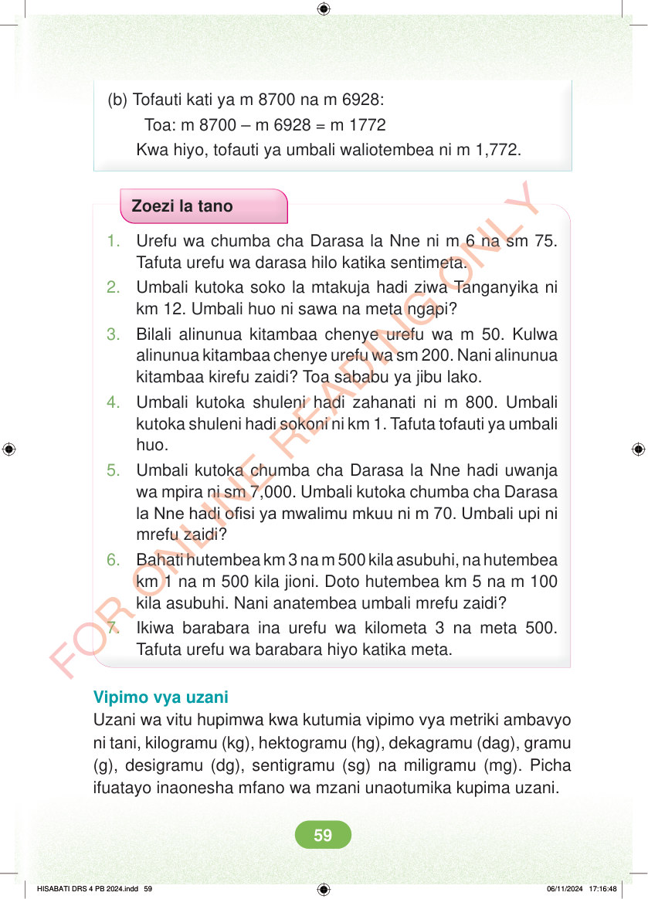

<!DOCTYPE html>
<html lang="sw-TZ"><head><meta charset="utf-8"><meta name="viewport" content="width=device-width,initial-scale=1">
<title>Hisabati: Kitabu cha Mwanafunzi Darasa la Nne</title>
<meta name="title-id" content="pg065_sec001"><meta name="page-section-id" content="68">
<link href="./content/tailwind_output.css" rel="stylesheet"><link href="./assets/libs/fontawesome/css/all.min.css" rel="stylesheet"><link href="./assets/fonts.css" rel="stylesheet">
<style>body{margin:0;background:#eef1ed}main{width:100%;display:flex;justify-content:center;padding:1rem 1rem 5rem;box-sizing:border-box}#content{width:100%;display:flex;justify-content:center}.pdf-page{position:relative;width:min(calc(100vw - 2rem),56rem);aspect-ratio:540.8980102539062/750.6610107421875;background:white;box-shadow:0 4px 24px #0002;overflow:hidden}.pdf-page img{position:absolute;inset:0;width:100%;height:100%;object-fit:fill}</style>
</head><body><main><h1 class="sr-only" id="page-heading">Ukurasa wa 65</h1><div id="content" class="opacity-0"><section role="article" data-section-type="pdf_accessible_page" data-section-id="pg065_sec001" aria-labelledby="page-heading" class="pdf-page"><p class="sr-only" data-id="pg065_gp001_tx001">(b) Tofauti kati ya m 8700 na m 6928: Toa: m 8700 – m 6928 = m 1772 Kwa hiyo, tofauti ya umbali waliotembea ni m 1,772. Zoezi la tano 1. Urefu wa chumba cha Darasa la Nne ni m 6 na sm 75. Tafuta urefu wa darasa hilo katika sentimeta. 2. Umbali kutoka soko la mtakuja hadi ziwa Tanganyika ni km 12. Umbali huo ni sawa na meta ngapi? 3. Bilali alinunua kitambaa chenye urefu wa m 50. Kulwa alinunua kitambaa chenye urefu wa sm 200. Nani alinunua kitambaa kirefu zaidi? Toa sababu ya jibu lako. 4. Umbali kutoka shuleni hadi zahanati ni m 800. Umbali kutoka shuleni hadi sokoni ni km 1. Tafuta tofauti ya umbali huo. 5. Umbali kutoka chumba cha Darasa la Nne hadi uwanja wa mpira ni sm 7,000. Umbali kutoka chumba cha Darasa la Nne hadi ofisi ya mwalimu mkuu ni m 70. Umbali upi ni mrefu zaidi? 6. Bahati hutembea km 3 na m 500 kila asubuhi, na hutembea km 1 na m 500 kila jioni. Doto hutembea km 5 na m 100 kila asubuhi. Nani anatembea umbali mrefu zaidi? 7. Ikiwa barabara ina urefu wa kilometa 3 na meta 500. Tafuta urefu wa barabara hiyo katika meta. Vipimo vya uzani Uzani wa vitu hupimwa kwa kutumia vipimo vya metriki ambavyo ni tani, kilogramu (kg), hektogramu (hg), dekagramu (dag), gramu (g), desigramu (dg), sentigramu (sg) na miligramu (mg). Picha ifuatayo inaonesha mfano wa mzani unaotumika kupima uzani. HISABATI DRS 4 PB 2024.indd 59 HISABATI DRS 4 PB 2024.indd 59 06/11/2024 17:16:48 06/11/2024 17:16:48</p></section></div></main><div class="relative z-50" id="interface-container"></div><div class="relative z-50" id="nav-container"></div><script src="./assets/offline-preloader.js?v=audiofix-20260824-1"></script><script src="./assets/scorm.js"></script><script src="./assets/base.bundle.local.js?v=audiofix-20260824-1"></script></body></html>